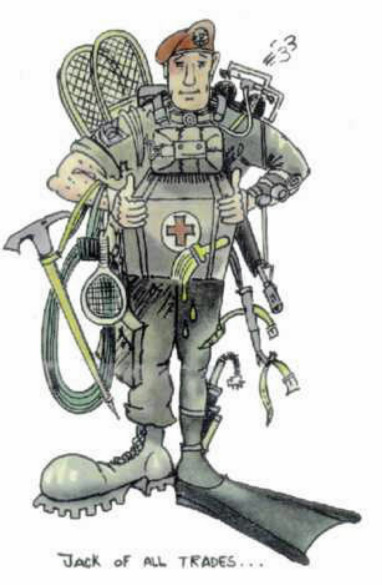

I was always good at fixing and making stuff...from computer programs to cars. I like to learn whatever interests me at the moment irrespective of temporal, spatial and strategic constraints such as a syllabus or an exam. I ended up learning a lot of sciences that most of my peers won't normally get to learn. This includes decent experience in Amatuer Astronomy, Automobile engineering and Semi-Advanced Computer Science.
I want to be that engineer whose specialisation is Aerospace, Defence and Aviation but won't need somebody else's help to assemble a next-gen gaming rig or to notice design flaws in the plan of a new house. I find concepts such as a job and happy personal life and tons of money (now who doesn't say no to that) mundane if not boring.
My long term goal will be to know the reason of existance. Why our race exists gathering data, processing it, consuming energy in the process? Where does the output go? Why does this high potential energy system still exist? Why didn't it collapse aeons ago? We are a huge network of organic computers that share data-points and alter the environment....for what? What happens when the synthetic computers come into the system forming the network and we are the creators... the super-network? What does that make us?
And the beautiful cosmic accidents: Origin of life, and Origin of intelligence. Two processes that lead to most unstable states but happened on our tiny insignificant planet. WHY THE FUCK?
We all wanted to be Tony stark at some stage of our lives, right? I'm no exception
{kind=link}